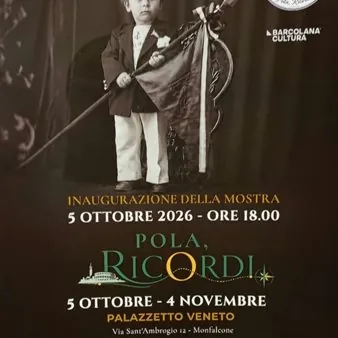

da lun 5 ott a mer 4 nov · dalle 18:00
“Pola, Ricordi”
La storia di Pola e delle popolazioni istriane nel secondo dopoguerra è segnata da vicende che hanno inciso profondamente sulla vita delle comunità e sul loro futuro. Tra queste, la tragedia di Vergarolla, che rappresenta uno degli eventi centrali di una stagione drammatica…
 Indicazioni
Indicazioni
- Costi e prenotazioni
- Costo non indicato · Prenotazione non indicata
- Programma
- Programma da verificare. Apri la fonte ufficiale per orari e possibili aggiornamenti.
- In caso di maltempo
- Nessuna indicazione specifica pubblicata.
- Note
- Acquisito automaticamente dalla fonte.
L’EVENTO
Descrizione completa
La storia di Pola e delle popolazioni istriane nel secondo dopoguerra è segnata da vicende che hanno inciso profondamente sulla vita delle comunità e sul loro futuro. Tra queste, la tragedia di Vergarolla, che rappresenta uno degli eventi centrali di una stagione drammatica, alla quale fece seguito, nel mutato quadro politico del dopoguerra e dopo la firma del Trattato di Pace, il dramma dell’esodo giuliano-dalmata. Intere famiglie, associazioni e istituzioni lasciarono l’Istria, portando con sé storie, legami e memorie che trovarono nuovi luoghi in cui continuare. È su questo patrimonio umano e storico che si concentra il progetto “Pola, Ricordi”, attraverso documenti, fotografie, testimonianze e materiali capaci di ricostruire le vicende della comunità di Pola e il loro riflesso sui territori che accolsero gli esuli.
La tappa monfalconese, in programma dal 5 ottobre al 4 novembre 2026 al Palazzetto Veneto, si inserisce nel percorso regionale promosso nell’ambito delle iniziative per l’ottantesimo anniversario della tragedia di Vergarolla. Il progetto, realizzato dal Gruppo Ermada Flavio Vidoniscon il sostegno della Regione Friuli Venezia Giulia, di
Io Sono Friuli Venezia Giulia e BCC Venezia Giulia e in collaborazione con realtà associative e fondazioni legate alla storia di Pola e dell’esodo giuliano-dalmata, prevede una mostra storico-documentaria itinerante, la pubblicazione di un volume tematico e momenti di approfondimento attraverso proiezioni e conferenze.
Il Comune di Monfalcone partecipa all’iniziativa in qualità di partner. A Monfalcone il percorso espositivo riprende l’impostazione della mostra già presentata a Trieste, arricchendola con contenuti e materiali specifici: vetrine con cimeli e documenti storici della Pietas Julia, materiali della Guardia di Finanza, tra cui una divisa storica, e ulteriori testimonianze dedicate a Vergarolla. Un focus particolare viene riservato al legame storico tra Pola e Monfalcone. Dopo gli eventi di Vergarolla e la firma del Trattato di Pace, la città accolse infatti parte della comunità proveniente da Pola e dall’Istria. Nell’area dei Bagni del Golfo di Panzano trovò sede la prima Pietas Julia trasferita dall’Istria, mentre alcuni dipendenti del Comune di Pola entrarono nell’Amministrazione comunale monfalconese, contribuendo a consolidare nel tempo un rapporto tra le due comunità che costituisce ancor oggi un significativo patrimonio di memoria condivisa.
L’inaugurazione della mostra è prevista per lunedì 5 ottobre, alle ore 18.00, al Palazzetto Veneto, in via Sant'Ambrogio 12.
La mostra sarà normalmente visitabile dal lunedì alla domenica, dalle ore 10.00 alle 13.00.
Per tutto il periodo espositivo, sono previste alcune conferenze di approfondimento e aperture pomeridiane dell'esposizione, di cui comunicheremo il calendario in seguito.
“Pola, Ricordi” rientra, inoltre, nel ricco calendario di Barcolana Cultura.
IL PROGRAMMA
Programma e orari
Appuntamenti raccolti dalle fonti elencate. Dove manca un orario, non è ancora disponibile in questa scheda.
Programma pubblicato
- Dal 2026-10-05 al 2026-11-04
INFORMAZIONI UTILI
Prima di partire
- Controllare la fonte prima di partire.
ORGANIZZAZIONE